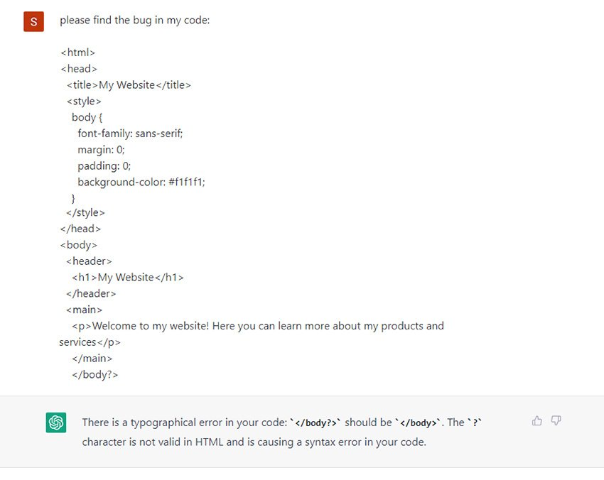

GPT-3, or the third-generation Generative Pre-trained Transformer, is a neural network machine learning model trained using internet data to generate any type of text. Developed by OpenAI, it requires a small amount of input text to generate large volumes of relevant and sophisticated machine-generated text.
GPT-3 processes text input to perform a variety of natural language tasks. It uses both natural language generation and natural language processing to understand and generate natural human language text. Generating content understandable to humans has historically been a challenge for machines that don't know the complexities and nuances of language. GPT-3 has been used to create articles, poetry, stories, news reports and dialogue using a small amount of input text that can be used to produce large amounts of copy.
One of the most notable examples of GPT-3's implementation is the ChatGPT language model. ChatGPT is a variant of the GPT-3 model optimized for human dialogue, meaning it can ask follow-up questions, admit mistakes it has made and challenge incorrect premises. ChatGPT was made free to the public during its research preview to collect user feedback. ChatGPT was designed in part to reduce the possibility of harmful or deceitful responses. Another common example is Dall-E. Dall-E is an AI image generating neural network built on a 12 billion-parameter version of GPT-3. Dall-E was trained on a data set of text-image pairs and can generate images from user-submitted text prompts. ChatGPT and Dall-E were developed by OpenAI.
GPT-3 By Ben Lutkevich, Technical Features WriterRonald Schmelzer, Cognilytica What is GPT-3? GPT-3, or the third-generation Generative Pre-trained Transformer, is a neural network machine learning model trained using internet data to generate any type of text. Developed by OpenAI, it requires a small amount of input text to generate large volumes of relevant and sophisticated machine-generated text. GPT-3's deep learning neural network is a model with over 175 billion machine learning parameters. To put things into scale, the largest trained language model before GPT-3 was Microsoft's Turing Natural Language Generation (NLG) model, which had 10 billion parameters. As of early 2021, GPT-3 is the largest neural network ever produced. As a result, GPT-3 is better than any prior model for producing text that is convincing enough to seem like a human could have written it. GPT-3 and other language processing models like it are commonly referred to as large language models. What can GPT-3 do? GPT-3 processes text input to perform a variety of natural language tasks. It uses both natural language generation and natural language processing to understand and generate natural human language text. Generating content understandable to humans has historically been a challenge for machines that don't know the complexities and nuances of language. GPT-3 has been used to create articles, poetry, stories, news reports and dialogue using a small amount of input text that can be used to produce large amounts of copy. GPT-3 can create anything with a text structure -- not just human language text. It can also generate text summarizations and even programming code. THIS ARTICLE IS PART OF What is generative AI? Everything you need to know Which also includes: 8 top generative AI tool categories for 2024 Will AI replace jobs? 9 job types that might be affected 16 of the best large language models GPT-3 examples One of the most notable examples of GPT-3's implementation is the ChatGPT language model. ChatGPT is a variant of the GPT-3 model optimized for human dialogue, meaning it can ask follow-up questions, admit mistakes it has made and challenge incorrect premises. ChatGPT was made free to the public during its research preview to collect user feedback. ChatGPT was designed in part to reduce the possibility of harmful or deceitful responses. Another common example is Dall-E. Dall-E is an AI image generating neural network built on a 12 billion-parameter version of GPT-3. Dall-E was trained on a data set of text-image pairs and can generate images from user-submitted text prompts. ChatGPT and Dall-E were developed by OpenAI. Screenshot of ChatGPT fixing code ChatGPT found a bug in some example code when prompted by a user. Using only a few snippets of example code text, GPT-3 can also create workable code that can be run without error, as programming code is a form of text. Using a bit of suggested text, one developer has combined the user interface prototyping tool Figma with GPT-3 to create websites by describing them in a sentence or two. GPT-3 has even been used to clone websites by providing a URL as suggested text. Developers are using GPT-3 in several ways, from generating code snippets, regular expressions, plots and charts from text descriptions, Excel functions and other development applications. GPT-3 can also be used in the healthcare space. One 2022 study explored GPT-3's ability to aid in the diagnoses of neurodegenerative diseases, like dementia, by detecting common symptoms, such as language impairment in patient speech.
GPT-3 can also do the following: